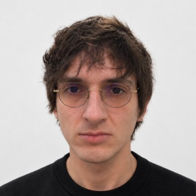

I
Neuroevolution Viz
Visual analytics for population dynamics in neural-network weight space. Projection, transport and vector fields.
Visual analytics for population dynamics in neural-network weight space. Projection, transport and vector fields.
Infrastructure, automation and distributed systems designed to survive contact with reality.
Records, live shows and unfinished ideas. An engineering problem with considerably more feedback.
Engineer and M.Sc. researcher in Artificial Intelligence at the Federal University of Rio Grande do Sul (UFRGS), working with the ExpLAIn laboratory. My research focuses on how populations of neural networks move, reorganize and converge through high-dimensional weight spaces.
My background crosses software engineering, machine learning, distributed systems and aeronautical sciences. I am especially interested in methods that make complex learning systems observable, interpretable and reproducible — particularly where reliability matters.

Affiliation
UFRGS · INF · ExpLAIn
Discipline
Artificial Intelligence
Coordinates
Porto Alegre · Brazil
Current state
Graduate Researcher
Understanding how neural populations evolve through weight space.
The central problem: evolutionary algorithms produce populations rather than a single optimization trajectory. I investigate how dimensionality reduction, temporal alignment, optimal transport and vector-field representations can expose the redistribution of these populations over generations.
UFRGS
Neuroevolutionary population dynamics, dimensionality reduction, temporal alignment and visual analytics.
Software architecture, distributed systems, infrastructure and engineering methodologies.
Aviation systems, operations and safety. Private Pilot training in progress.
also: Systems Analysis & Development · Data Science · BI · Process Management · Project Management
Neuroevolution
Evolutionary Computation
Machine Learning
Representation Dynamics
Explainable AI
Weight-space Analysis
Dimensionality Reduction
Visual Analytics
Aviation Systems
Bioinformatics
Scientific Computing
Research Software
Aviation is both a personal pursuit and a research domain.
I study Aeronautical Sciences and am pursuing Private Pilot training. The technical intersection is particularly interesting: autonomous systems, trajectory optimization, anomaly detection and interpretable decision support for safety-critical environments.
Python · PyTorch · JAX · TensorFlow · CUDA · UMAP · t-SNE · Scikit-learn · OpenCV · Pandas · Docker · Linux · FastAPI · PostgreSQL · Git · Matplotlib · Plotly · Streamlit · D3.js
Open to research collaborations and work involving artificial intelligence, neuroevolution, visual analytics, scientific computing and aviation systems.